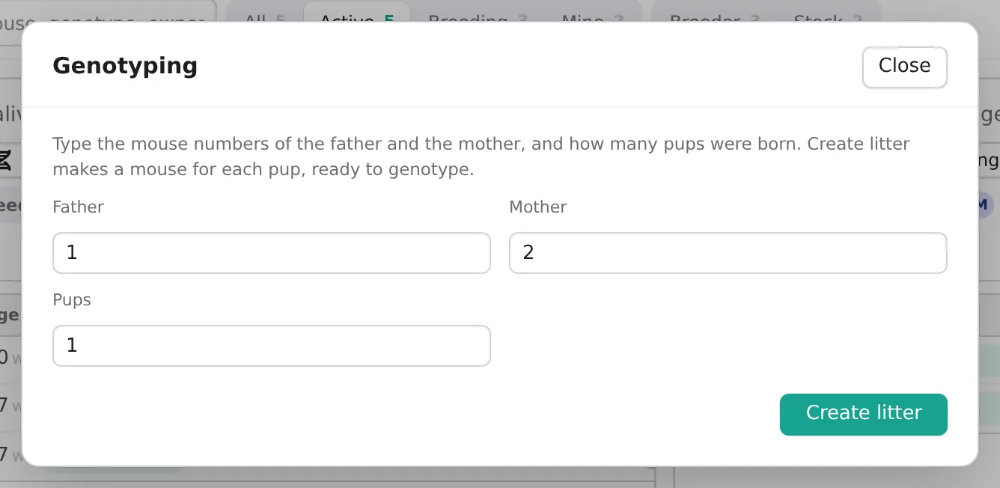

How to…
Genotype a litter
Make a mouse for each pup of a new litter, then enter their genotypes when the results come back.
Anyone who may edit the cageDesktop and lab server
- Once the litter is recorded, open the breeding cage on the Cages tab and press Genotyping.
- Check the Father and Mother, and type the number of Pups.Father and mother start as the cage's first male and female. Pups is a whole number from 1 to 40.
- Press Create litter. BioManager makes the litter, numbered L-1, L-2, L-3…, and a mouse for each pup, set to geno.The pups are in that cage, and they are yours.
- When the results are in, find the pups: In the mouse sheet, on the open cage, lists that cage's mice. On Home, the Genotyping queue lists mice waiting, and View mice opens the mouse sheet.The genotyping day (P28, or the one chosen in Lab setup) is on Home and the calendar, and a daily note reminds you of pups waiting to be genotyped.
- Type each pup's result in its Genotype cell, and its sex if it isn't set yet. Each cell saves as you type.
- Change each pup's Status from geno to what it is for now, such as breeder or experiment.For many at once, tick them and use Set field.
A pup waits in the genotyping queue on Home while its status is geno, and leaves it once that changes. If someone else records the genotype of your mice, you are notified.

Was this page helpful?
No